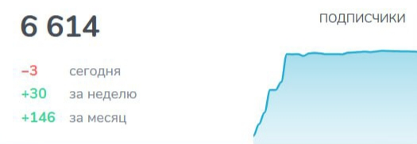
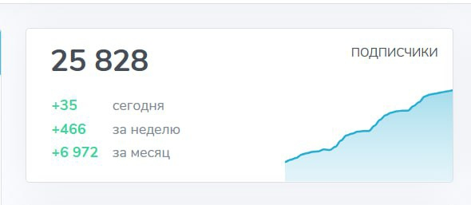

Кейс: рост Telegram-канала об инвестициях
Задача и подход
Канал уже существовал, но публикации не давали ощутимого роста: контент был однотипным, подписчики теряли интерес, а новые приходили крайне медленно. Нужно было не просто наполнять канал текстами, а превратить его в площадку, которая удерживает внимание и формирует доверие к автору.
Мы сделали упор на системность и ценность: регулярные посты, живой язык, акцент на практическую пользу. Контент стал работать как инструмент вовлечения, а не как формальная публикация. Вскоре появились первые признаки органического роста и вовлечённой аудитории — это позволило строить дальнейшую стратегию масштабирования.
Старт
Первый месяц показал, что даже без вложений в рекламу канал можно оживить. Мы внедрили регулярность, выстроили контент-план, убрали перегруженные формулировки и сделали акцент на темах, которые реально волнуют аудиторию. Подписчики начали реагировать активнее, возвращаться к постам и обсуждать их.

Точка ускорения
К третьему месяцу стало понятно: базовое внимание аудитории уже завоевано, но нужен толчок для роста. Мы добавили новые форматы публикаций — рубрики, которые вызывали живую реакцию, и короткие лид-магниты, чтобы стимулировать сохранения и репосты. Подписчики вовлекались охотнее, а свежие форматы обеспечили рост аудитории быстрее, чем в первые месяцы.

Масштабирование
Когда контентная база укрепилась, мы перешли к масштабированию. Были подключены рекламные интеграции и таргет, а публикации адаптированы под более широкую аудиторию без потери экспертности. Эта комбинация — сильный контент + продвижение — закрепила рост и сделала его управляемым. Канал превратился в полноценный инструмент продвижения личного бренда, который уверенно удерживает внимание десятков тысяч подписчиков.